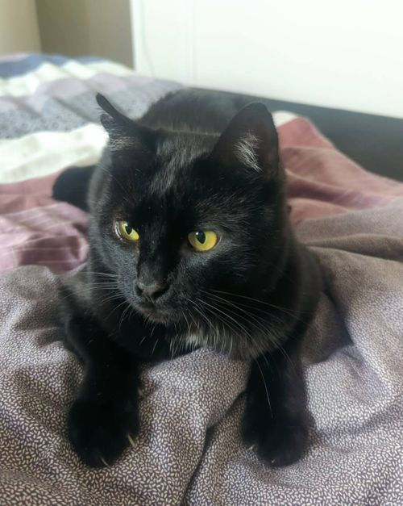
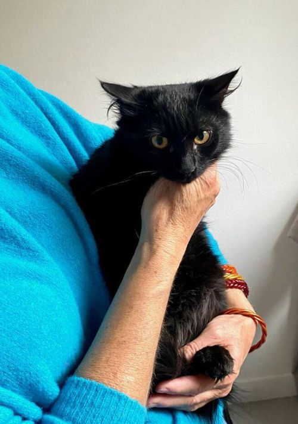
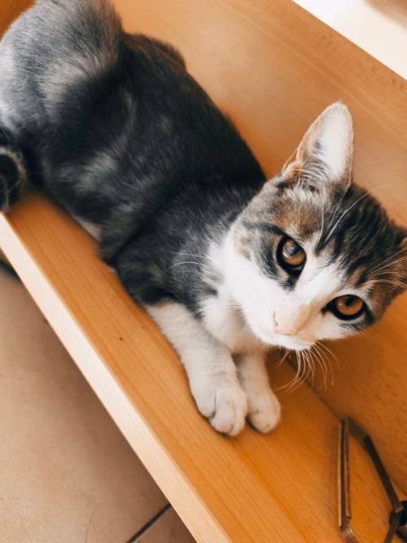
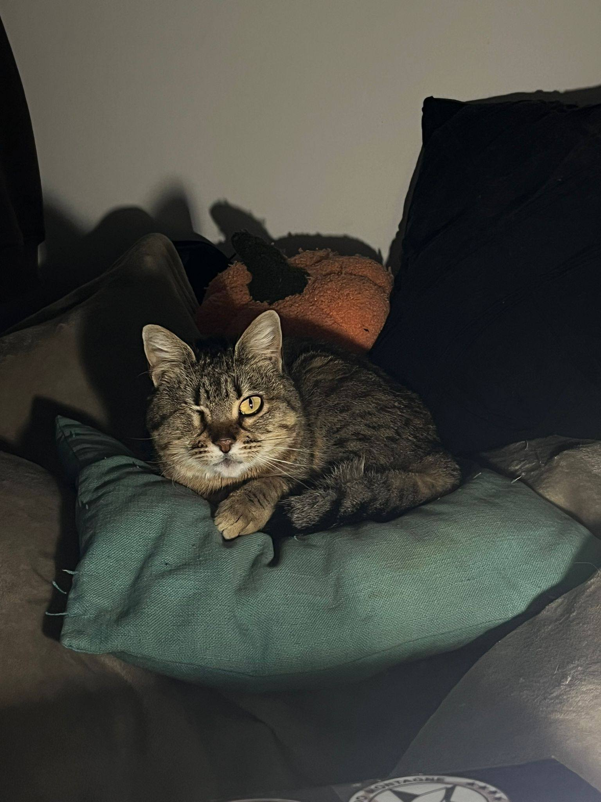
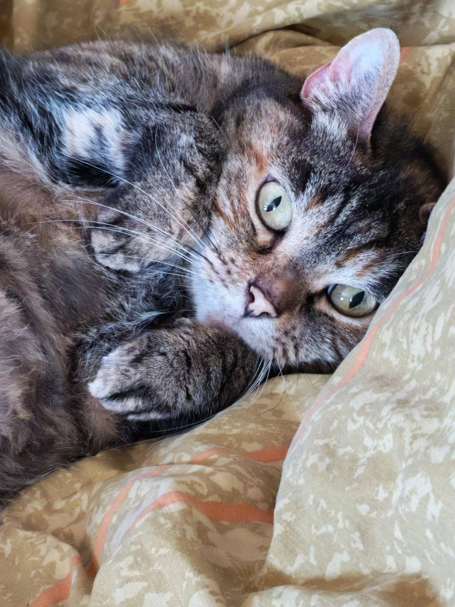
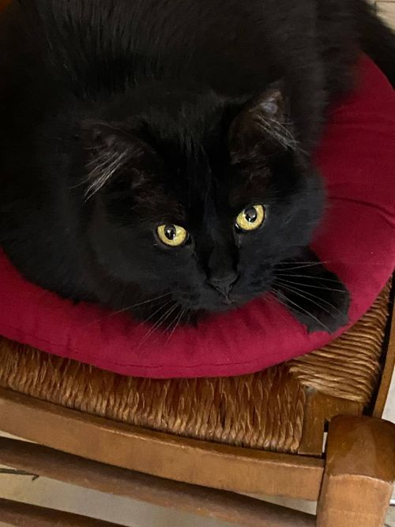
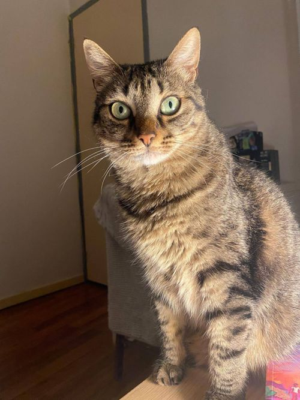

Lulu ♂
3 ans
❌ Fermer cette fiche ❌
🐈 Lulu à l'adoption.
Notre beau Lulu est toujours à l'adoption et personne ne semble s'intéresser à lui...
Et pourtant ! C'est un grand matou d'une douceur infinie, adorable, qui adore les câlins, les ronrons et tout ce qui va avec. ♥️
Lulu a tout ce qu'il faut pour combler une famille de bonheur, il est d'ailleurs très gentil avec les enfants.
Lulu a été récupéré dans la rue, dans laquelle il se faisait martyriser par d'autres chats errants. Nous l'avons donc pris sous nos ailes.
Ce joli chat âgé de 3 ans peut vivre en appartement, il a déjà eu l'occasion de côtoyer des chiens et tout s'est toujours bien passé avec nos amis canidés.
❤️🩹 Lulu est positif au FIV ou sida du chat. La maladie n'impacte pas son quotidien mais elle sera à prendre en compte. Son système immunitaire est plus faible et il sera donc nécessaire de porter une attention particulière aux petits bobos.
La plupart des chats porteurs du FIV vivent très bien et longtemps ! Si vous avez des interrogations face à ça nous pouvons en discuter ensemble. 😊
🌎 À rencontrer sur Gap (05).
Adoption sauvetage à 100€.
Lulu est :
- ☑️ Identifié par puce électronique
- ☑️ Castré
- ☑️ Testé fiv+
- ☑️ Déparasité
- ☑️ Vacciné
- ☑️ Certifié en bonne santé par un vétérinaire
Le certificat d'engagement et de connaissance, délivré par nos soins, doit être lu et signé. Vous pouvez consulter ce document en cliquant ici.
Pour nous contacter à son sujet, utilisez la page dédiée de notre site, section "je souhaite adopter un chat". Précisez que c'est Lulu qui vous intéresse et donnez-nous un maximum de détails sur l'accueil que vous lui offririez. Nous reviendrons vers vous dès que possible !
Maxou ♂
10 mois
❌ Fermer cette fiche ❌
🐈⬛🐈⬛ Maxou à l'adoption !
Ce grand bonhomme de dix mois est à la recherche de sa famille 🥰
Issu de la rue et récupéré il y a peu de temps, il est encore un peu craintif et va avoir besoin d'humains calmes, tout doux et patients... Des adoptants Bisounours ! 😁
Il se laisse caresser et porter à bras mais il va lui& falloir encore un peu de temps pour bien s'acclimater et s'habituer pleinement aux humains.
Si son profil vous touche, n'hésitez pas à aller le rencontrer et à vous laisser séduire par sa petite bouille ♥️
🌎 À rencontrer à l'Argentière-La-Bessée (05).
Adoption à 230€.
Maxou est :
- ☑️ Identifié par puce électronique
- ☑️ Déparasité
- ☑️ Stérilisé
- ☑️ Primo-vacciné
Le certificat d'engagement et de connaissance, délivré par nos soins, doit être lu et signé. Vous pouvez consulter ce document en cliquant ici.
Pour nous contacter à leur sujet, utilisez la page dédiée de notre site, section "je souhaite adopter un chat". Précisez que c'est Maxou qui vous intéresse et donnez-nous un maximum de détails sur l'accueil que vous lui offririez. Nous reviendrons vers vous dès que possible !
Timmy ♂
10 mois
❌ Fermer cette fiche ❌
🐈⬛🍂 Timmy à l'adoption !!! 🍁
Aujourd'hui, nous vous proposons Timmy à l'adoption. Ce jeune matou d'environ 6 mois a été récupéré sur le tard. Il était errant et n'a pas été épargné par la rue. Il a une cicatrice à l'œil.
💙💚💛 Malgré le travail formidable de sa famille d'accueil, il reste timide. Il aura besoin d'une famille d'adoption calme et patiente, qui prendra le temps de gagner sa confiance. Cependant, Timmy progresse de jours en jours, il ronronne beaucoup dès qu'il est câliné et se plaît à dormir avec les humains de sa famille d'accueil 🐈⬛
Timmy est propre, pourra vivre en appartement et appréciera la compagnie d'un copain bien dans ses pattes qui l'aidera à prendre confiance. Il est ok chiens, chats, furets ! 🥰
🌎 À rencontrer sur Gap (05).
Adoption à 180€.
Timmy est :
- ☑️ Identifié par puce électronique
- ☑️ Déparasité
- ☑️ Stérilisé
- ☑️ Testé FIV/FELV négatif
- ☑️ Vacciné (rappel dans un an)
- ☑️ Certifié en bonne santé par un vétérinaire
Le certificat d'engagement et de connaissance, délivré par nos soins, doit être lu et signé. Vous pouvez consulter ce document en cliquant ici.
Pour nous contacter à son sujet, utilisez la page dédiée de notre site, section "je souhaite adopter un chat". Précisez que c'est Timmy qui vous intéresse et donnez-nous un maximum de détails sur l'accueil que vous lui offririez. Nous reviendrons vers vous dès que possible !
Chataigne ♀
2 ans
❌ Fermer cette fiche ❌
🐈🤎 Châtaigne à l'adoption !
Nous vous présentons la jolie Châtaigne, désormais à l'adoption ☺️
Châtaigne a intégré l'association en fin de printemps 2025 et a passé un long moment au sein de sa famille d'accueil qui a fait un merveilleux travail de sociabilisation 🥰
Châtaigne vivait dans un camping et était nourrie par les vacanciers, jusqu'à ce que l'un d'entre eux nous signale cette pauvre et jeune minette qui avait besoin de soins 🙏
Châtaigne a été énucléée, son œil gauche n'étant plus viable, certainement suite à un coryza jamais soigné.
Habituée à vivre uniquement en extérieur et sans trop de contact avec les humains, son arrivée en famille d'accueil a été un peu bouleversante pour elle, mais désormais, Châtaigne se laisse papouiller et vient même dire bonjour aux invités !
Mission accomplie 💪
Malheureusement pour elle, elle est positive au FIV, mais elle se porte bien.
Elle peut vivre en appartement, et cohabiter avec un copain chat sympa avec ses congénères !
🌎 À rencontrer sur Gap (05).
Adoption à 230€ avec possibilité de régler en plusieurs fois.
Châtaigne est :
- ☑️ Identifiée par puce électronique
- ☑️ Déparasitée
- ☑️ Stérilisée
- ☑️ Testée FIV positive/FELV négative
- ☑️ Vaccinée (rappel dans un an)
Le certificat d'engagement et de connaissance, délivré par nos soins, doit être lu et signé. Vous pouvez consulter ce document en cliquant ici.
Pour nous contacter à son sujet, utilisez la page dédiée de notre site, section "je souhaite adopter un chat". Précisez que c'est Châtaigne qui vous intéresse et donnez-nous un maximum de détails sur l'accueil que vous lui offririez. Nous reviendrons vers vous dès que possible !
Plume ♀
5 ans
❌ Fermer cette fiche ❌

⛄️🐈 Plume à l'adoption 🩵
Une petite chatte d'environ 5 ans, habillée d'une belle robe marron et noire. Plutôt discrète et craintive, elle s'habitue cependant rapidement à l'humain.
Elle a beaucoup d'amour à revendre, elle demande constamment des caresses. Mais ne se laisse pas porter, c'est bien mieux de se poser sur les genoux de son humain.
Famille idéale : présente et calme, qui ne se déplace pas beaucoup. Il peut y avoir la présence d'un autre chat sympa avec ses congénères si la famille n'est pas présente en journée. Elle connaît les chiens.
Plume peut être un peu craintive face à un chat qui en impose, elle sera bien plus à l'aise avec un minou qui accepte de prendre le temps nécessaire pour faire connaissance en douceur.
Sa particularité : ses petites pattes et son ronronnement qui roucoule.
💛💚💙 N'hésitez surtout pas à venir la rencontrer...
🌎 À rencontrer sur Abriès-Ristolas (05).
Adoption à 230€ avec possibilité de régler en plusieurs fois.
Plume est :
- ☑️ Identifiée par puce électronique
- ☑️ Déparasitée
- ☑️ Stérilisée
- ☑️ Testé FIV positive/FELV négative
- ☑️ Vaccinée (rappel dans un an)
- ☑️ Certifiée en bonne santé par un vétérinaire
Le certificat d'engagement et de connaissance, délivré par nos soins, doit être lu et signé. Vous pouvez consulter ce document en cliquant ici.
Pour nous contacter à son sujet, utilisez la page dédiée de notre site, section "je souhaite adopter un chat". Précisez que c'est Plume qui vous intéresse et donnez-nous un maximum de détails sur l'accueil que vous lui offririez. Nous reviendrons vers vous dès que possible !
Miss Terre ♀
9 ans
❌ Fermer cette fiche ❌
🐾🐈⬛ Miss Terre à l'adoption
Miss Terre est une chatte d’environ 9 ans, très propre et calme.
Récupérée errante et apeurée dans les rues de Gap, elle a depuis quelques semaines intégrée l'association et nous espérons lui trouver prochainement une chouette famille 🥰
Miss Terre a besoin d'un temps d'adaptation lorsqu'elle rencontre une nouvelle personne mais ensuite, elle se montre être très attachante et câline.
Cette minette partage actuellement le quotidien d'un chien et tout va bien, disons qu'elle ne s'en préoccupe pas le moins du monde 😅
Miss Terre aura besoin d'un foyer calme et aimant.
Nous pensons que Miss Terre est stérilisée mais nous demanderons à sa future famille de la surveiller de près sur les mois à venir afin de s'assurer qu'elle ne déclenche pas ses chaleurs. Si cela devait arriver, l'association prendra la stérilisation à sa charge.
🌍 À rencontrer sur Chorges (05).
Adoption à 230€ avec possibilité de régler en plusieurs fois.
Miss Terre est :
- ☑️ Identifiée par puce électronique
- ☑️ Déparasitée
- ☑️ Stérilisée ==> à surveiller
- ☑️ Vaccinée (rappel dans un an)
- ☑️ Certifiée en bonne santé par un vétérinaire
Le certificat d'engagement et de connaissance, délivré par nos soins, doit être lu et signé. Vous pouvez consulter ce document en cliquant ici.
Pour nous contacter à son sujet, utilisez la page dédiée de notre site, section "je souhaite adopter un chat". Précisez que c'est Miss Terre qui vous intéresse et donnez-nous un maximum de détails sur l'accueil que vous lui offririez. Nous reviendrons vers vous dès que possible !
Baby ♀
5 ans
❌ Fermer cette fiche ❌
🐱🥰 Baby à l'adoption
Baby est une très gentille minette âgée de 5 ans.
Baby fait partie des nombreux animaux qui restent en arrière-plan lors d'un déménagement...
Pour autant elle n'est pas rancunière vis-à-vis des humains. Elle est restée très câline et joueuse !
Baby est une chatte plutôt calme, qui s'adapte rapidement à la nouveauté.
Baby est un tantinet bavarde, elle sait s'exprimer si quelque chose ne lui convient pas 😋
Elle adore passer ses nuits roulée en boule contre son humaine de famille d'accueil.
Il semblerait que Baby n'aime pas beaucoup être portée mais elle restera de bonne composition.
Baby pourrait certainement cohabiter avec des congénères.
🌎 À rencontrer sur Embrun (05).
Adoption à 230€ avec possibilité de régler en plusieurs fois.
Baby est :
- ☑️ Identifiée par puce électronique
- ☑️ Déparasitée
- ☑️ Stérilisée
- ☑️ Testé FIV/FELV négative
- ☑️ Vaccinée (rappel dans un an)
- ☑️ Certifiée en bonne santé par un vétérinaire
Le certificat d'engagement et de connaissance, délivré par nos soins, doit être lu et signé. Vous pouvez consulter ce document en cliquant ici.
Pour nous contacter à son sujet, utilisez la page dédiée de notre site, section "je souhaite adopter un chat". Précisez que c'est Baby qui vous intéresse et donnez-nous un maximum de détails sur l'accueil que vous lui offririez. Nous reviendrons vers vous dès que possible !